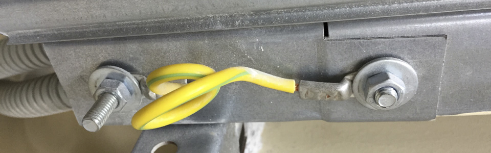

1.1 В тепловых пунктах следует предусматривать рабочее искусственное освещение для VI разряда зрительной работы и аварийное освещение. (СП 41-101-95, п.7.3)
1.2 Светильники аварийного освещения необходимо маркировать красной буквой "А". Если нет трафарета, можно обозначить полоской красной изоленты.
1.3 Клавишу выключателя аварийного освещения необходимо так же маркировать красной буквой "А" или полоской красной изоленты.
1.4 Как правило проводка выполняется в жестких и гладких трубках ПВХ с применением распаячных коробок. Все стыки должны быть герметичны. Трубка ПВХ должна быть такого диаметра, чтобы плотно заходить в распаячную коробку и в сам светильник. В местах стыков используйте силикон при необходимости.
2.1 Заземлять необходимо все металлические элементы и конструкции в помещение ИТП. Если возникает вопрос: заземлять или не заземлять, то ответ один: заземлять.
2.2 Основания теплообменников, насосных станция необходимо заземлять стальной полосой на контур заземления. Заземление должно быть видимое, нельзя убирать полосу под плитку или под пол. Соединение должно быть только на сварке. (п.1.7.139 ПУЭ)
2.3 Трубы теплоснабжения необходимо заземлять. Как правило, заземляются при вводе в ИТП. Для этого на трубы навариваются болты, и заземление идет через кабель при помощи болтового соединения, через шайбы. Весь контур труб должен быть заземлен. Не забываем делать перемычки на гибких вставках у насосов и на расходомерах у узла учета энергии.
2.4 Места соединения лотков необходимо заземлять перемычкой. Перемычку с двух сторон обжимаем наконечниками под болт. Соединяем исключительно через болт шайбы и гайку. Саморезами крепить перемычку нельзя! (п.1.7.142 ПУЭ).
2.5 Кабель на силовой потребитель (насосы, бойлеры) должен прокладываться в металлорукаве. Металлорукав необходимо заземлять. Удобнее всего это делать с помощью автомобильного хомута, зажав им гибкий кабель заземления.
2.6 Не забываем заземлять: шкаф управления, дверцу шкафа, контроллер, узел учета, исполнительные механизмы, датчики. Очень важно заземлить оплетку экранированного кабеля, это снизит помехи и даст более точные показания датчика.
2.7 Корпус насоса заземляется в распаячной коробке земляным проводом в составе кабеля. Иногда технадзор требует сделать видимое заземление, бросив кабель отдельно на корпус. Это обусловлено тем, что ремонтная группа должна быть уверена, что насос заземлен, и чтобы не лезть вскрывать распайку насоса.
3.1 Нужно внимательно врезать датчик температуры обратного теплоносителя. Выбирайте место аккуратно, после всех врезок, на выходе из ИТП. Если врежете датчик до, например, врезки обратки вентиляции, то будут неправильные показатели обратки, что приведет к неправильной работе контроллера и к превышению обратки.
3.2 Датчик наружного воздуха необходимо располагать на северной стене здания. Иногда, сделать это невозможно, и датчик вешают по кратчайшему пути до ближайшей стены. Датчик необходимо защищать от прямых солнечных лучей. Либо вешать его под козырек, либо монтировать какую-нибудь коробку (все зависит от конструкции датчика). Смысл в том, чтобы при любой погоде, датчик показывал действительную температуру на улице. Это очень важно для построения температурного графика и для корректной работы контроллера.
3.3 Температурные датчики необходимо врезать через гильзы, а гильзы в бобышки. В противном случае, быстро заменить неисправный датчик не получится. Датчики давления, датчики реле давления, перепадники, необходимо врезать через кран, желательно со спускником. Датчики давление нужно врезать либо перпендикулярно трубе, либо под 45 градусов в противоток движению теплоносителя. Это лучше уточнить у эксплуатирующей организации.
3.5 Кабель к датчикам, как правило, подходит в гофре. Разъем в датчике редко соответствует ей, поэтому, получается так, что гофра болтается где-то на подходе, оголяя кабель. С эстетической точки зрения, лучше всего использовать термоусадку. Это даст герметичность, отличный внешней вид и покажет определенный уровень в монтаже.
4.1 При пусконаладке насосов, обратите внимание, в каком направление он вращается. У насосов есть свойство создавать разность давления не зависимо от направления вращения, поэтому иногда сложно бывает узнать, правильно ли он подключен. Если на корпусе есть стрелка вращения, то можно сунуть кусок стяжки в вентилятор и понять в ту ли он сторону вращается.
4.2 Ввод в шкаф в ИТП необходимо производить только снизу, так как это помещение повышенной влажности. Это касается и силовых шкафов, и шкафов управления, и ЯБПВУ, и ЯТП.
4.3 Все кабели необходимо маркировать. Со стороны прибора (датчика, привода, насоса, и т.д.) на бирке пишется с одной стороны: наименование прибора, с обратной стороны: тип кабеля, сечение, и от куда он приходит. Бирки в самом шкафу подписываются так: с одной стороны, куда уходит кабель, с другой стороны тип кабеля. Так же бирками подписываются задвижки, насосы, выключатели безопасности, бойлеры и т.д.
4.4 Бывают случаи, когда в тепловом пункте начинают перегорать электроприводы. Как правило, это происходит из-за того, что давление теплоносителя выше, чем положено, и привод работает под нагрузкой. Повышение давления происходит в свою очередь, из-за поломки регулятора давления. А его можно проверить простым способом: потрогать импульсные трубки, если они горячие, значит мембрана порвалась, и вода циркулирует напрямую и понижения давления не происходит.